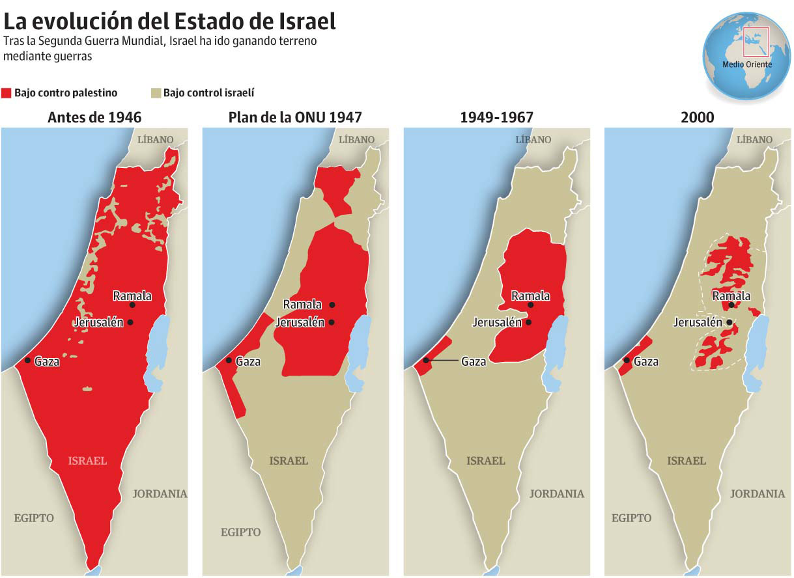
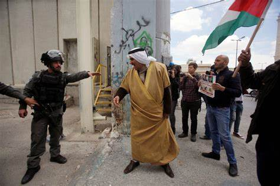
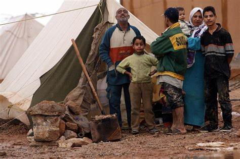

El conflicto israelí-palestino es un conflicto prolongado y complejo que involucra a dos grupos principales: los israelíes y los palestinos. Ha sido una fuente constante de tensión y violencia en la región de Oriente Medio durante décadas.Aunque es imposible abordar todos los aspectos de este conflicto en detalle, aquí hay una visión general de sus causas, antecedentes y algunos de los eventos clave:
CUESTIONES TERRITORIALES
REFUGIADOS PALESTINOS
DERECHOS Y AUTODETERMINACION
  Causas y Antecedentes:
El conflicto israelí-palestino se origina en una disputa territorial arraigada en reclamos sobre tierras en Cisjordania, Jerusalén Este y la Franja de Gaza. Ambas partes desean Jerusalén como su capital y se agrava por la creación de una población significativa de refugiados palestinos después de la Guerra de Independencia de Israel en 1948. Los palestinos buscan la autodeterminación y derechos, mientras que Israel se preocupa por su seguridad. Los antecedentes de este conflicto incluyen la creación de Israel en 1948, que condujo a la Nakba y la expulsión de palestinos, y la Guerra de los Seis Días en 1967, que resultó en la ocupación israelí de Cisjordania, Jerusalén Este y Gaza. Los Acuerdos de Oslo en 1993 establecieron la Autoridad Palestina y un proceso de paz interrumpido por la violencia. A lo largo de los años, ha habido conflictos y operaciones militares, como la Intifada de Al-Aqsa en 2000 y varias guerras en Gaza. A pesar de los esfuerzos de mediación, el conflicto persiste, y las negociaciones para alcanzar una solución duradera siguen siendo esquivas.